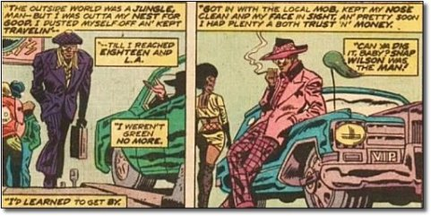

Fonte da imagem
História/Origem
Seguindo a linha de origem dos quadrinhos Sam Wilson, nasceu no Harlem, filho de Darlene e Paul
Wilson e o mais novo entre seus dois irmãos. Seu pai (que era um reverendo) acabou sendo morto ao
tentar pôr um fim em uma briga entre vizinhos. Como se isso já não fosse trágico o suficiente, Sam
viu ainda sua mãe ser assassinada em um assalto. Sam fez de tudo para continuar uma vida sem ter que
se envolver em maldades, mas sua tristeza e raiva o levaram a se tornar um criminoso, chamado
"Snap", quando trabalhava para máfia no Harlem, Nova York, que depois agiria em Los Angeles. Depois
de então largar essa vida de criminoso ele resolve melhorar sua comunidade se tornando um assistente
social.


De volta de uma viagem ao Rio de Janeiro, onde encontrou seu mascote falcão Asa Vermelha, Sam foi
dominado pelo Caveira Vermelha, para ser usado em um de seus esquemas contra o Capitão América, o
que
acabou lhe dando poderes telepáticos com as aves através do cubo cósmico, ou também conhecido como
Tesseract (a Joia do Espaço). O Caveira Vermelha então exerceu controle mental sobre Sam para atacar
o
Capitão América, que acabou o libertando do controle mental e juntos derrotaram o Caveira.
Reconhecendo
o potencial de Wilson, o Capitão acolheu-o como aprendiz e parceiro.
Poderes e Habilidades
- Conexão mental com as aves, acessando também os olhos e as memórias delas.
- Controle dos passáros.
- Inteligência e habilidades em tecnologia e em hackear (elogiado até mesmo pelo próprio homem de ferro).
- Habilidades de luta, tendo sido treinado pelo próprio Capitão América.
- Utilizando seu traje, pode voar e usar diferentes aparelhos tecnológicos.